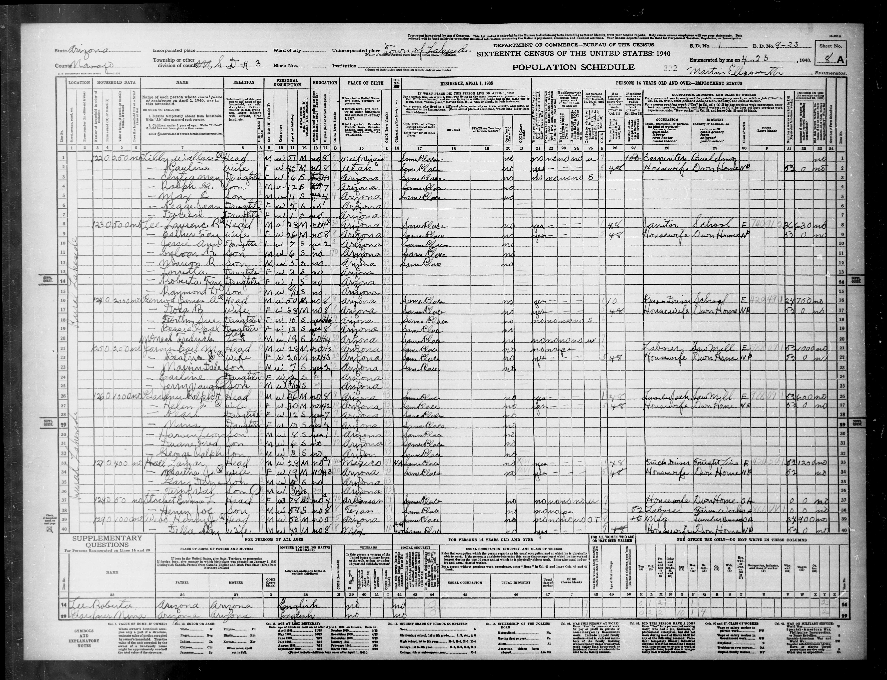
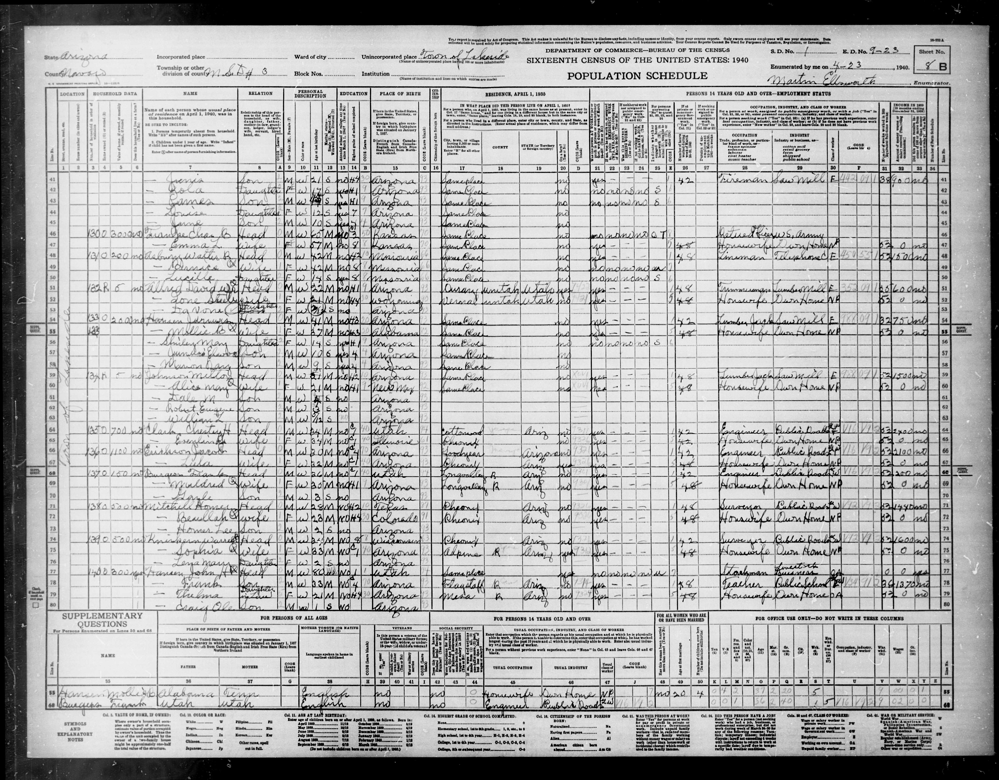

| Sheet/line | Name | Relationship | Sex as entered | Color | Age | Marital status | Attended school | Highest grade | Birthplace | Residence 1 April 1935 | Occupation | Industry | |---|---|---|---|---|---|---|---|---|---|---|---|---| | 8A/39 | Webb Henry J [final mark uncertain] | Head | M | W | 53 | M | no | 5 | Arizona | Same Place | Mfg. [abbreviation reading] | Lumberman | | 8A/40 | — Della Ray | Wife | M [as written] | W | 49 | M | no | 8 | Mex | Same Place | Housewife | Own Home | | 8B/41 | — Junius | Son | M | W | 21 | S | no | H4 | Arizona | Same Place | Fireman | Saw Mill | | 8B/42 | — Zola | Daughter | F | W | 17 | S | yes | H1 [reading uncertain] | Arizona | Same Place | [blank] | [blank] | | 8B/43 | — James | Son | M | W | 15 [overwritten] | S | yes | H1 [reading uncertain] | Arizona | Same Place | [blank] | [blank] | | 8B/44 | — Louise | Daughter | F | W | 13 | S | yes | 7 | Arizona | Same Place | [blank] | [blank] | | 8B/45 | — June | Son | M | W | 10 | S | yes | 5 [reading] | Arizona | Same Place | [blank] | [blank] | Household home owned (`O`), value `100`, on farm `no`. All 1935 farm-residence cells `no`. Della's citizenship cell appears `Am Cit` (qualify reading); it records reported status and does not establish the acquisition route or date. Circle beside head's name appears to indicate respondent, but mark is not sufficiently clear to identify the informant with certainty. Employment columns: Henry marked no/no/no/no and `OT` [reading] in main activity; 46 hours, class `OA`, 34 weeks worked in1939, income `900`, other income `no`. Della marked yes in work column [as entered], hours `48`, class `WP` [reading], weeks `52`, wages `0`, other income `no`. Junius marked yes, hours `42`, class `E`, weeks `39`, wages `900` [amount reading uncertain], other income `no`. Zola and James marked no/no/no/no and `S`; remaining employment/income fields blank. Younger children's employment fields blank. Administrative occupation and birthplace coding visible in originals; not separately transcribed.